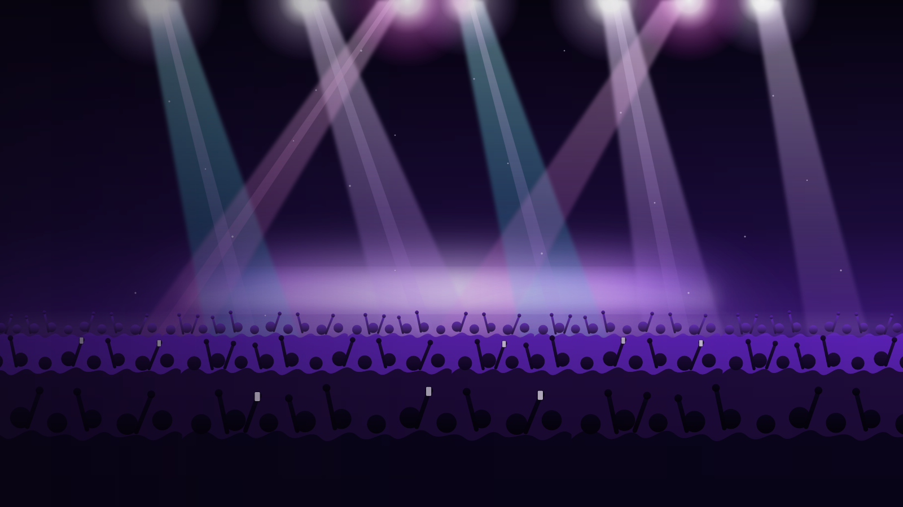
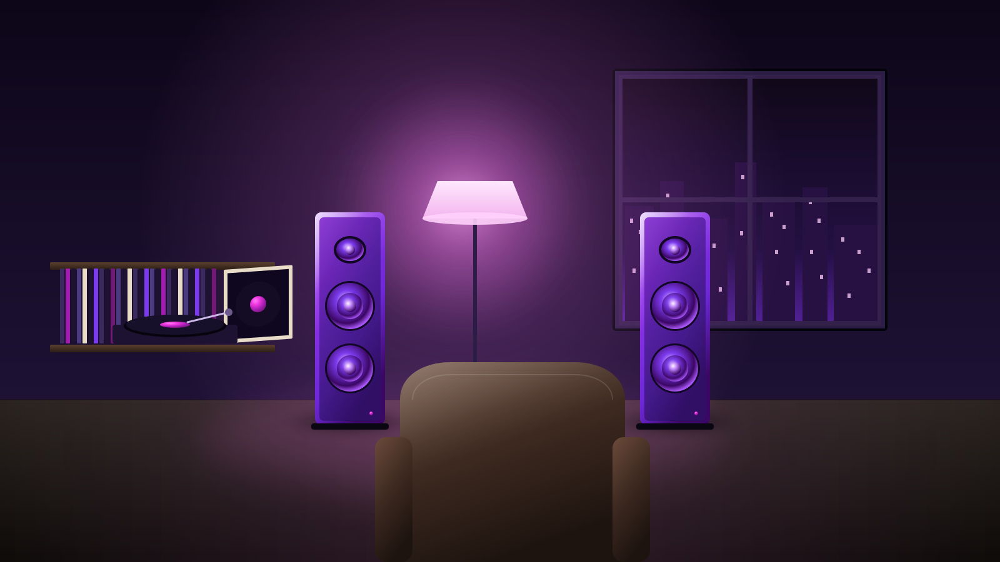

Naad · for people who still play whole albums
Streaming hands you a copy of a copy, squeezed to fit down a pipe. Naad keeps the master. The breath before the first line, the room around the drums, the last second of the fade. All of it, every time you press play, for the rest of your life.
You know that album you've heard a thousand times? There are sounds on it you have never heard, because every file you've ever streamed left them out to save space. Naad leaves nothing out. Not a sample. Not a breath. Press play and the whole thing is there.
The drummer hits it and it hangs in the air for ages. Lossy files cut it off early because a model decided you'd stopped listening. We didn't.
Not roughly the same. The same. We check every note down to the last bit on two different machines before we'll call it done, so you never have to wonder.
No streaming account to keep alive. No "this track is no longer available in your region." No remaster you didn't ask for. It's a file on your drive, in a format you could print on paper.
Edvard Grieg · Musopen Symphony · 24-bit / 48 kHz · public domain
Naad has played this whole record. This very file, start to finish, went through the Sanskrit decoder one frame after another, and the audio it wrote out, all 44,378,214 bytes of it, is identical to the master, byte for byte, down to the fingerprint the studio sealed inside the file. That is 154 seconds of music, every sample, and it did it inside 6.6 MB of memory, less than one photo. The player around it is what we are building. But it is this recording, all of it, it came out of Naad, and it is real.
And not only this one. Naad has now played all 70 recordings of the broadcasters' reference library, the EBU test set that studios have judged sound by for decades, and 70 of them came out matching the fingerprint their makers sealed inside each file. Checksums nobody here computed. Not one miss.

A set is a promise. Naad does exactly the same work for the same record every time it plays, on every machine we have tried, so there's nothing in the chain that suddenly needs a breather at two in the morning. The floor never hears the machine.

The bass you feel in your chest. The hi-hat you can almost see. The singer taking a breath between lines. Naad doesn't shave any of it to save space, so your speakers finally get the whole record.
Naad is licensed to the people who make players and gear. It is tiny enough to live inside a speaker, simple enough that the engineers who build them can read every line of it, and it keeps working when the chip that first ran it is gone.
Most formats live and die with an app. Naad is a short piece of writing in a language people have been reading for three thousand years, and a toolbox that fits on the memory card in your camera. The file you keep today plays the same in thirty years.
Small enough to run inside the gear itself: earbuds, a DAC, a car head unit, a chip with no operating system and no room for a runtime. Fewer lines means fewer moving parts between the file and your ears, and nothing in the chain you cannot read. Read it yourself.
The whole toolchain is smaller than one album, and the decoder it builds asks about 6% of a phone's core to play the master, 3.4× faster than real time on the slowest chip we would plan for. Less work per note means more battery for the music, on anything from a laptop to the chip in your headphones.
Naad is licensed to the makers of players and gear. What you keep is the recording itself, every sample, on your own drive, and it does not expire with anyone's account. The archive it is being built for carries its own player inside the file, so a recording still opens when today's apps are gone.
Every figure here is somebody else's audited number, linked. What Naad brings to each room is the same thing: the master, exactly, from a decoder small enough to live anywhere and simple enough to trust for a whole night.
A dropout in front of fifty thousand people is a refund, a headline and a cancelled rebooking. Naad does the same work for the same record every time it plays, so there is nothing in the chain that needs a breather at two in the morning.
Source: Live Nation 10-K, FY2024Every other copy is derived from it. A format whose decode is provably exact, and whose decoder can be read in full, is how a master survives the next thirty years of players, chips and companies that will not.
Source: IFPI Global Music Report 2025That is the shape of this business: a technology small enough to sit inside a product and worth paying for on every unit. Naad asks about 6% of a phone core, needs no runtime, and fits in earbuds, DACs and cars.
Sources: Dolby 10-K, FY2024 · Canalys, 2025Most of those people are served at 96 or 160 kbps. On this page the master is 10× the bits of a High stream. The service that makes the master cheap enough to be the default wins the listeners who can hear the difference, and keeps the ones who cannot.
Source: IFPI Global Music Report 2025No forms. No funnel. No newsletter. One address, read by the people who wrote Naad, and a straight answer about what it does for you today and what it doesn't do yet.
naad@paramtatva.orgSend us the album you know by heart. We'll give it back exactly, with the proof, and you'll hear the bits every other file left out.
Bring your mastersClubs, festivals, installations, houses of worship. Anywhere the system has to run all night and never think about it.
Talk about the roomHeadphones, speakers, phones, DACs, cars. No runtime, nothing you have to trust blindly. Ask, and you get the licensing terms and the roadmap with dates.
Start an integrationNaad is one of several things we build on Sassembly, our own language and toolchain. We work on the layers everyone else treats as finished, because a stack you can't read to the bottom is a stack you don't own.
Each figure carries a metric, a commit and a command in figures.json, and a check refuses this page whenever the two disagree. The decoder the figures describe is shipped here under kernel/, at the commit named in its provenance note, under the GNU AGPL v3. Where a figure rests on an assumption, it is tagged projected. Where the work is not done, it is tagged planned.
Naad is written in Sassembly, a systems language whose every keyword is Sanskrit, written in itself, compiling to 64-bit RISC-V. The whole toolchain is 12 MB: compiler, assembler, linker and interpreter, with no LLVM, no GCC and nothing fetched at build time. Feed its source to itself and it produces a compiler image; feed the source to that image and it produces another, byte for byte identical. The decoder is called निःशेषम्, niḥśeṣam, "with no remainder", which is not a poetic name for lossless decoding but a definition of it. नाद, nāda, is sound considered as vibration rather than as signal.
A codec that will not tell you where it is weak is one you cannot plan around. These are the places Naad is behind the state of the art, what the gap measures, and what we already know about closing it.
Playback was never in question. Naad decodes at 3.4× real time on a 1 GHz core at one instruction per cycle, the most pessimistic machine anyone ships; on a laptop core, taken as 3.5 GHz at three instructions per cycle, that is 36×. Where we are genuinely behind is how many cycles that takes: a mature C decoder does the same work in a fraction of them, and on a device decoding all day that shows up as battery life, not as dropouts.
Profiled to the instruction. CRC-16 is still 24.0% of decode time after the octet-wise table. Next: the packed-word reader, which addresses the per-bit gather the table cannot touch and is worth more than the CRC was.Levinson-Durbin, apodization and the partition-order search are real and measured at parity with flac -8, as an exact bit count rather than a file. A second Python program now writes real FLAC files, and on the one stereo file measured flac and ffmpeg decode its output back to the original bit for bit. It searches fewer choices than the count prices and lands at +1.44% over flac -8 there. flac also warns on that file: its header misstates the minimum block size, a two-byte error with a known fix. None of this is native yet.
The join, that a stream of exactly that size decodes back, is not closed. The file writer checks its price against its own bits on every block, but no file it writes is yet as small as the count claims. Until one is, the encoder figure and the decoder figure are two claims, and the page keeps them apart.Naad's decoder is the one the Darśana archive carries inside the file, beside the music, so a recording can be opened decades from now with nothing but the file and a small machine. The file walker that makes this possible exists and is measured above: it reads whole recordings, steps over oversized metadata, recovers after a damaged frame, and refuses what it cannot decode with a named status. What it still owes that archive, safety first: a bound on every single read, so a hostile file can only ever be refused, where today a safety floor does that job at a cost in speed; files whose header block is not the first block, which are legal and are refused today; and more than two channels. Seeking, tags, cover art and a player around it are not built.
The decoder is under the GNU AGPL v3, and that travels with it: anyone who redistributes an archive with the decoder inside is redistributing the decoder, and owes its recipients the decoder's source under the same licence.Mono and every stereo pairing are done and verified. Surround and ambisonic material parses its header today and is then refused rather than guessed at.
An unimplemented path that answers is not the same as one that quietly returns something plausible.The best-sounding codecs in the world are now neural, and they run in floating point, so the same stream decodes to different files on different machines. A decoder that is exact by construction could change that. The papers exist; nothing ships it.
Nothing here ships yet. We will not describe it as available until it is measured.A recording is a list of amplitudes. Music is not. The Indian tradition spent centuries building a vocabulary for pitch, interval and ornament that is structural rather than statistical, and a codec that understood structure would not compete on the same axis at all.
This is the thesis the programme is chasing. It is research, and this page marks it as research.